Lösung
| 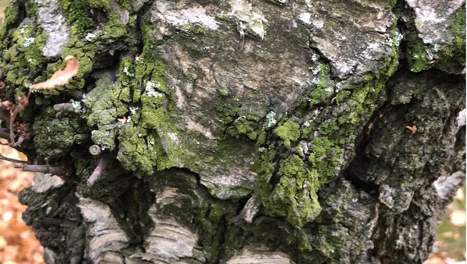
Detailbild mit Baumrinde. |
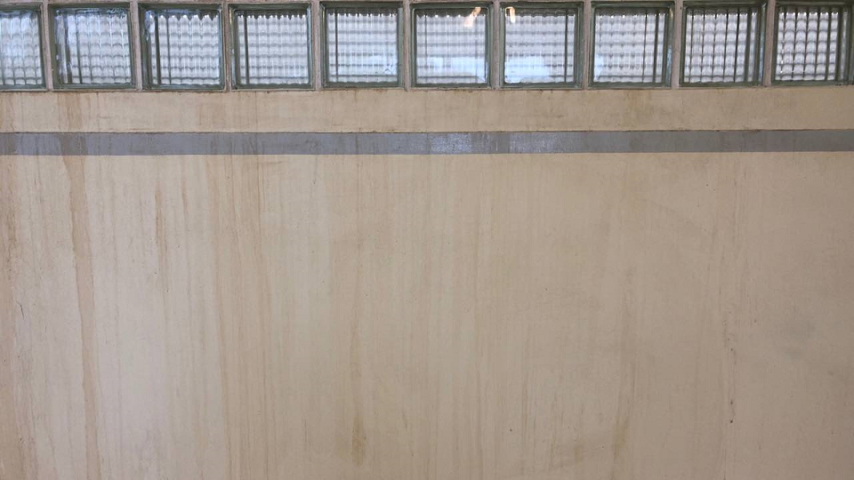
Flächenbild mit Wand. |
| 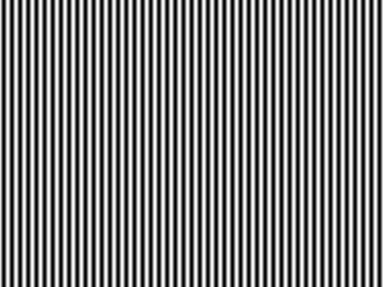
Zugesandtes Testbild mit vertikalen Linien |
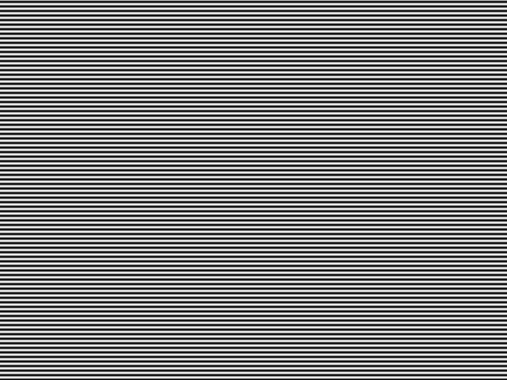
Zugesandtes Testbild mit horizontalen Linien |
Lösung
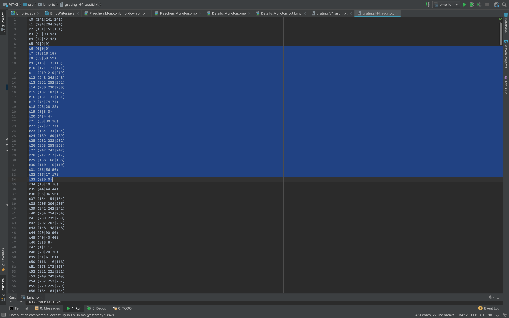 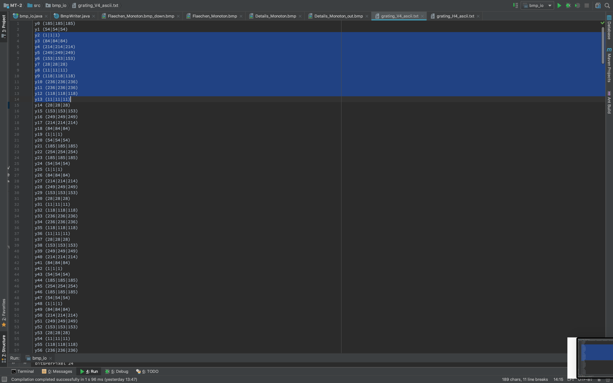Beschreibung
Beispielhafter Code für das Schreiben der x-Werte. Gleiches für y.
int r = bmp.image.getRgbPixel(x, 0).r;
int g = bmp.image.getRgbPixel(x, 0).g;
int b = bmp.image.getRgbPixel(x, 0).b;
String rgb = "x" + x + " (" + b + "|" + g + "|" + r + ")";
ascii.write(rgb);
ascii.newLine();
}Lösung
Schaut man sich die beiden Ascii-Textdatein an (Bild 1 für H4 und Bild 2 für V4) kann man die Perioden durch die Zahlengrößen schon erahnen.Lösung
Das Abtasttheorem besagt, dass man etwas mehr als eine doppelt so hohe Abtastrate benötigen, wie mein abgetastetes Bild.Lösung
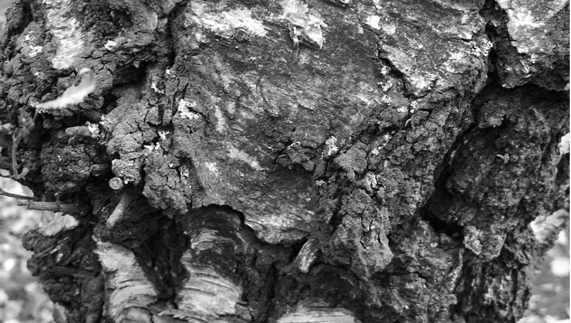for(int x = 0;x < bmp.image.getWidth(); x++) {
int r = bmp.image.getRgbPixel(x, y).r;
int g = bmp.image.getRgbPixel(x, y).g;
int b = bmp.image.getRgbPixel(x, y).b;
double Y = 0.3 * r + 0.6 * g + 0.1 * b;
int intY = (int) Y;
PixelColor pixelColor = new PixelColor(intY, intY, intY);
bmp.image.setRgbPixel(x, y, pixelColor);
}
}
Lösung
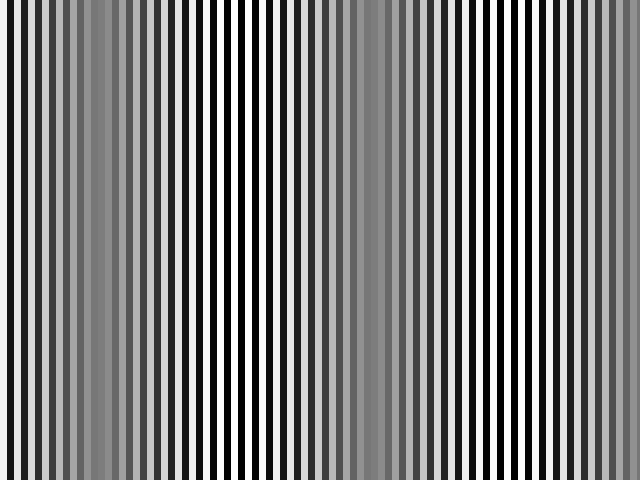 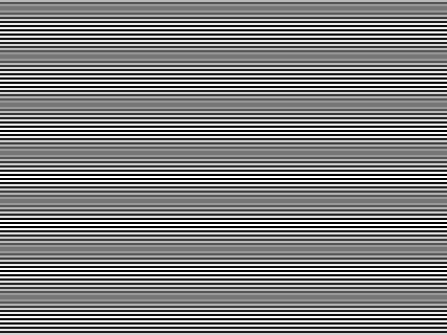Lösung
PixelColor pixelColor = null;
for(int x = 0; x < bmp.image.getWidth(); x++) {
if (!(y%mod == 0) && y > 0){
pixelColor = bmp.image.getRgbPixel(x, y - 1);
bmp.image.setRgbPixel(x, y, pixelColor);
}
}
PixelColor pixelColor = null;
for(int x = 0; x < bmp.image.getWidth(); x++) {
if (!(x%mod == 0) && x > 0){
pixelColor = bmp.image.getRgbPixel(x - 1, y);
bmp.image.setRgbPixel(x, y, pixelColor);
}
}
Die wird bmp_io so modifizieren, dass die Bitzahl reduziert werden kann. Dazu können werden z.B. alle RGB-Werte durch eine Potenz von 2 geiteilt (Integer-Division ohne Rest). Damit das resultierende Bild nicht dunkler wird als das Original, wird die Operation durch Multiplikation mit derselben Zweierpotenz kompensiert.
int reduced_bits = 3;
for(int y = 0; y < bmp.image.getHeight(); y++) {
for (int x = 0; x < bmp.image.getWidth(); x++) {
int pixelR = bmp.image.getRgbPixel(x, y).r / (int) Math.pow(2, reduced_bits)*(int) Math.pow(2, reduced_bits);
int pixelG = bmp.image.getRgbPixel(x, y).g/ (int) Math.pow(2, reduced_bits)*(int) Math.pow(2, reduced_bits);
int pixelB = bmp.image.getRgbPixel(x, y).b/ (int) Math.pow(2, reduced_bits)*(int) Math.pow(2, reduced_bits);
PixelColor reducedPixel = new PixelColor(pixelB, pixelG, pixelR);
bmp.image.setRgbPixel(x, y, reducedPixel);
}
}
Mit dem entstandenen Programm verändern wir die in Aufgabe 1 erzeugten BMP-Dateien. Ab welcher Bitzahl tritt beim Detail-Bild und beim Flächen-Bild eine sichtbare Verschlechterung der Qualität ein? Wie kann man diese Verschlechterung am besten beschreiben?
Detailbild Original
Detailbild 4 Bit-reduziert
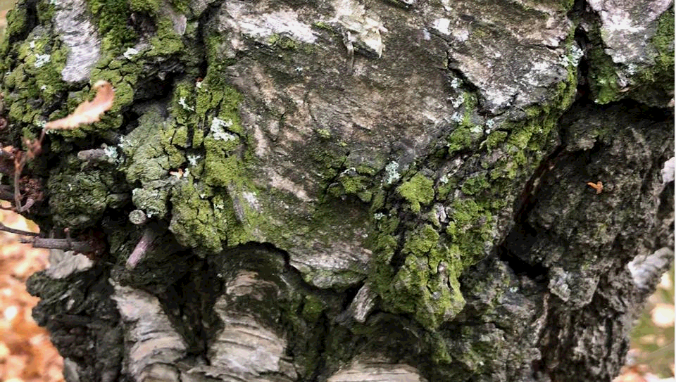
Detailbild 6 Bit-reduziert
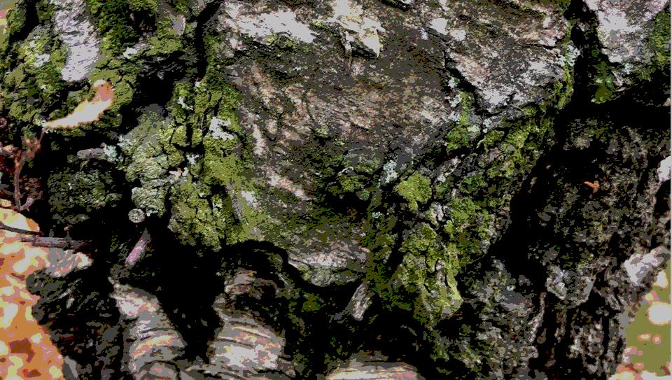
Detailbild 7 Bit-reduziert
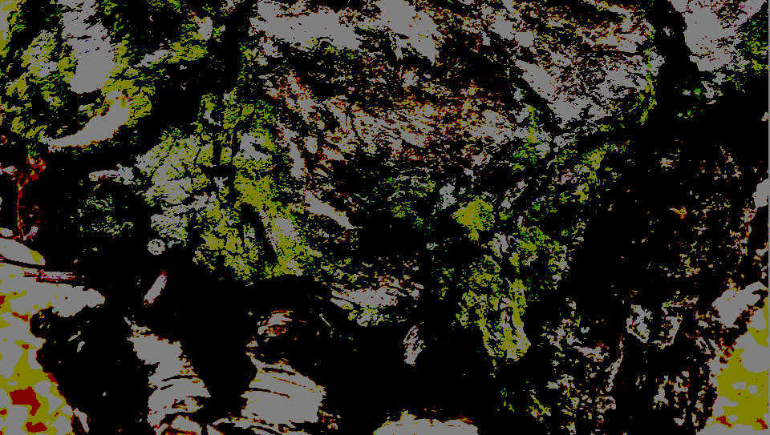
Beim Detailbild tritt erst bei einer 6-Bit-Reduzierung eine sofort sichtbare, und ab einer 7-Bit-Reduzierung eine deutliche
Verschlechterung der Qualität ein. Die Schattierungen, die durch die Feinheiten des Objekts geworfen werden, und auch allgemein die
Details des Objektes sind weniger sichtbar. Viel mehr sieht man, dass die Grenzen von Farbton zu Farbton (insbesondere hell-dunkel-Übergänge)
sehr viel schärfer gezogen werden und die einzelnen Farbflächen dadurch vergrößert werden (dunkle, vorher detailreiche Bereiche
werden flächig schwarz).
Diesen Effekt sieht man verdeutlicht am Flächenbild:
Flächenbild original
Flächenbild 3-Bit-reduziert
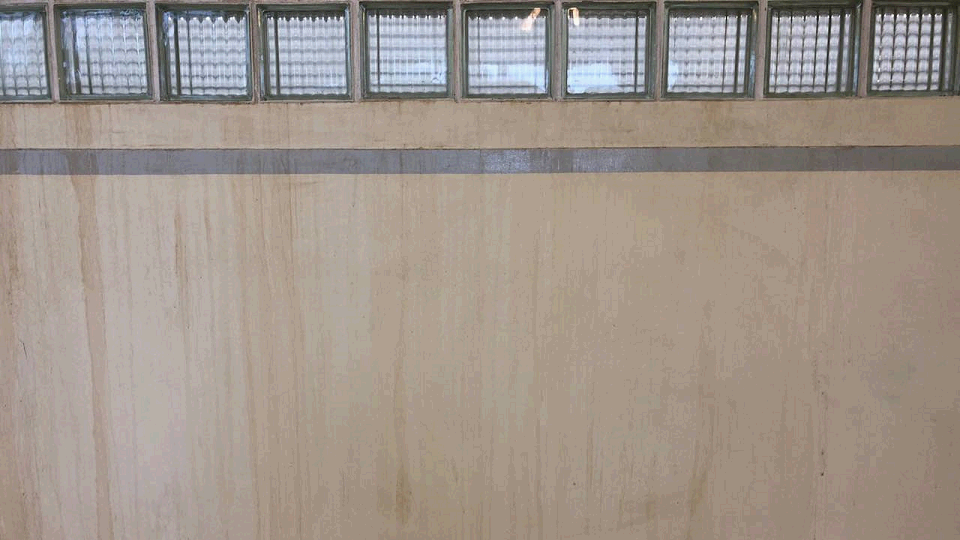
Flächenbild 4-Bit-reduziert
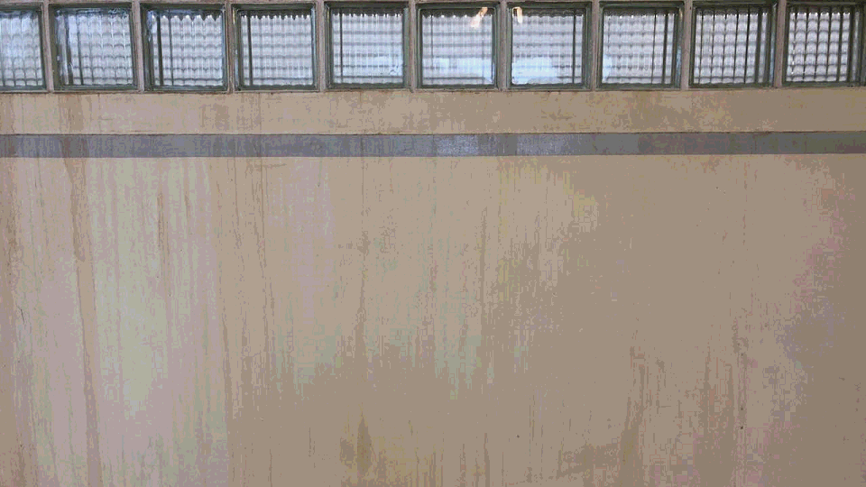
Flächenbild 6-Bit-reduziert
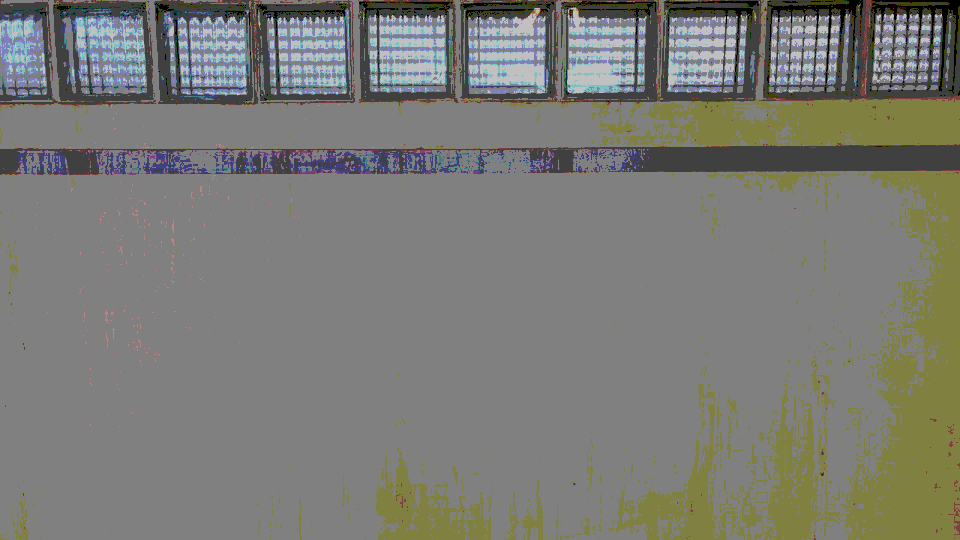
Flächenbild 7-Bit-reduziert
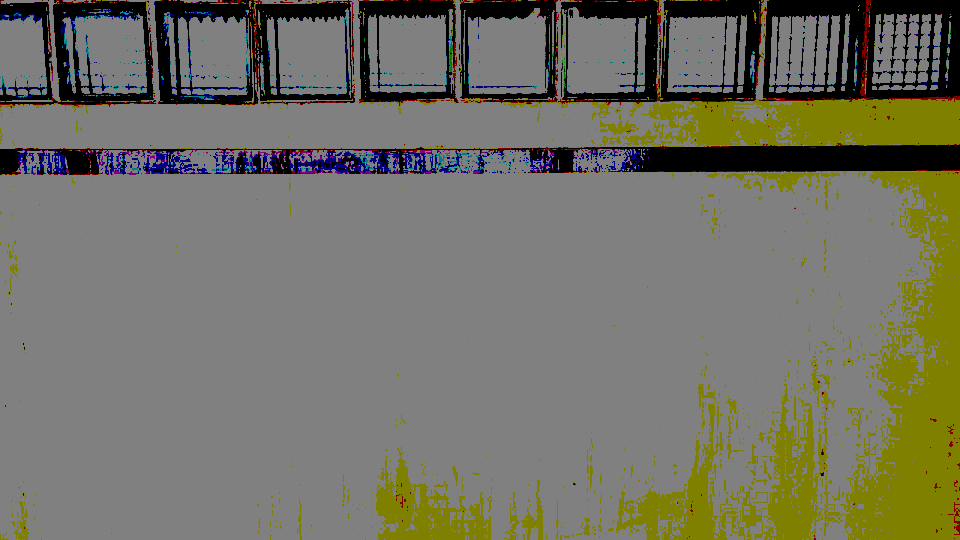
Hier beginnt man bereits bei der 3-Bit-Reduzierung im rechten Bereich die Einfärbung ähnlicher Farben auf dem Holz zu sehen. Bei der 4-Bit-Reduzierung
ist der Qualitätsverlust bereits deutlich zu sehen. Da dieses Bild keine detailreichen Bereiche hat, sind hier "schattigere" Bereiche
großflächig in einer Farbe abgebildet. Bei 6 oder gar 7 Bit ist nicht mehr zu erkennen, was auf dem Originalbild zu sehen war. Nur im
oberen Bereich des Bildes, wo die Glasquader mit Gitterstruktur zu sehen sind, kann man noch Details erkennen. Dies liegt daran, dass
dort wieder eine scharfe Abgrenzung zwischen hell und dunkel haben, wohingegen im unteren Bereich die Flächen im Original eine recht
gleichmäßige Farbstruktur aufwiesen.
Was steckt dahinter? Durch die Bitreduzierung gehen Informationen des Originalbildes verloren, und zwar die Informationen, die in den least significant Bits stecken. Durch das Teilen und folgende Multiplizieren mit der Zweierpotenz wird der Wert dieser least significant Bits auf 0 gesetzt. In der gesamten Bitzahl von 8 sind diese Reduzierungen jedoch sehr gering. Besonders in den feineren Farb- bzw. Helligkeitsübergängen sieht man den Detailverlust: die Oberflächen mit ähnlichen Farben werden nun durch eine Farbe dargestellt.
Der Verlust der Informationen der least significant Bits ist besonders bei dunkleren Farben zu sehen, dass die Farbe schwarz den RGB Wert (0,0,0) hat. Bei dunkleren Farben sind also auch niedrigere most significant Bits. Durch den Verlust der least significant Bits bleibt als Gesamtwert eine sehr niedrige Zahl übrig. Das Resultat ist ein großflächig dunkler, beinahe schwarzer Bereich.
Modifiziere dein Programm noch einmal so, dass auch das Differenzbild zwischen Original und bitreduziertem Bild, das heißt das Fehlerbild ausgegeben, werden kann. Beachte dabei, dass bei der Differenzbildung negative und positive Werte auftreten können. Diese müssen wieder in den Wertebereich 0...255 transformiert werden, d.h. auf den Mittelwert 127 gebracht werden (wie?). Dabei musst du auch bedenken, dass z.B. bei 1 Bit Reduzierung der Fehler nur 0, 1 oder -1 wäre. Dieser Wertebereich wäre viel zu klein, als dass man ihn in der 8bit-Grafik noch sehen könnte. Daher muss der Fehler durch Multiplikation mit einer 2er Potenz verstärkt werden. In anderen Worten: Hat man vorher durch 2^n geteilt, sollte man das Differenzsignal vor dem Abspeichern mit 2^(8-n-1) multiplizieren. So ist sichergestellt, dass der Verstärkungsfaktor mit der Anzahl der gelöschten Bits kleiner wird.
int reduced_bits = 7;
int bitsPerColor = 8;
int gainFactor = (int) Math.pow( 2, bitsPerColor - reduced_bits - 1 );
int powerOfTwo = (int) Math.pow(2, reduced_bits);
for(int y = 0; y < bmp.image.getHeight(); y++) {
for (int x = 0; x < bmp.image.getWidth(); x++) {
PixelColor p = bmp.image.getRgbPixel(x, y);
int r = (p.r - (p.r / powerOfTwo)* powerOfTwo) * gainFactor + 128;
int b = (p.b - (p.b / powerOfTwo)* powerOfTwo) * gainFactor + 128;
int g = (p.g - (p.g / powerOfTwo)* powerOfTwo) * gainFactor+ 128;
bmp.image.setRgbPixel(x, y, new PixelColor(r, g, b));
}
}
| 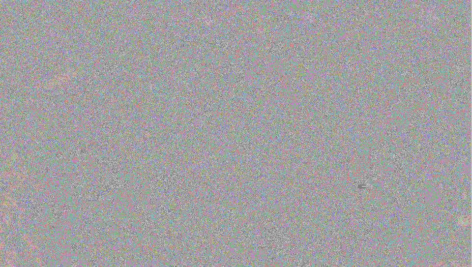 1 Bit Differenzbild |
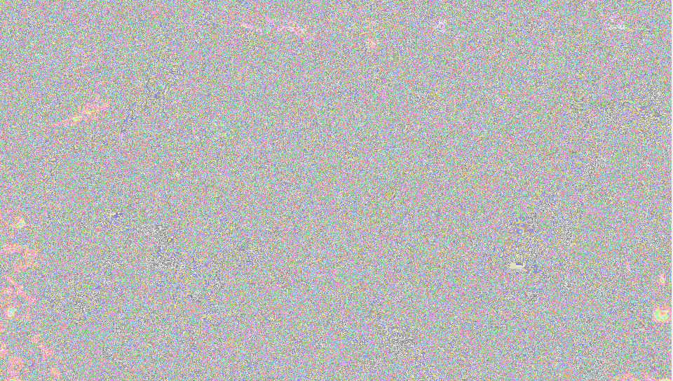 3 Bit Differenzbild |
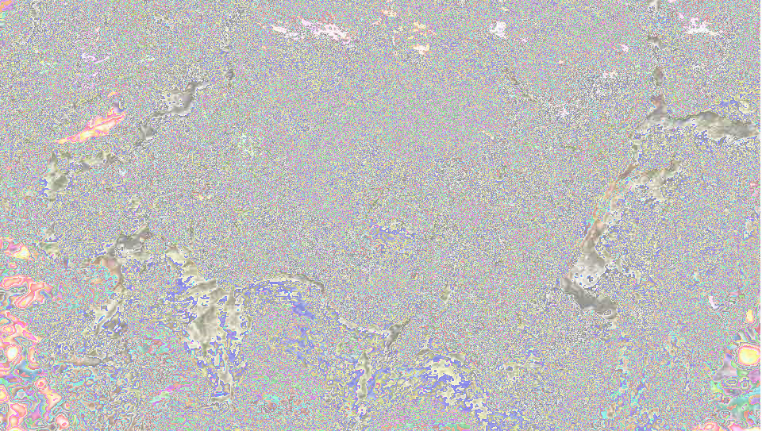 5 Bit Differenzbild |
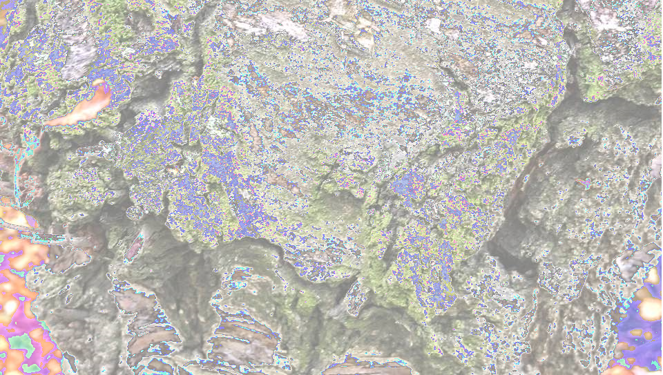 7 Bit Differenzbild |
| 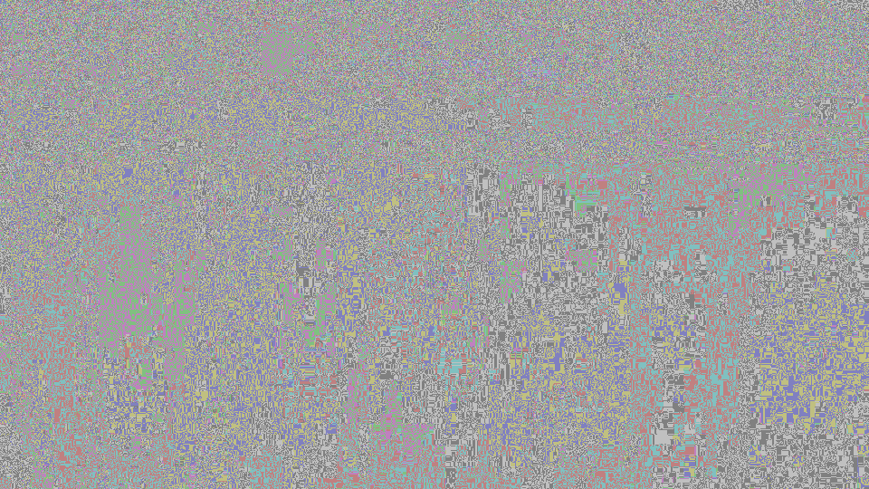 1 Bit Differenzbild |
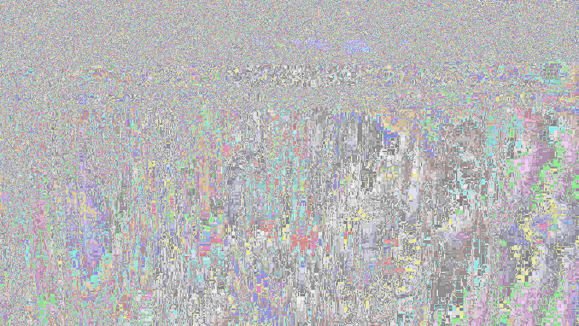 3 Bit Differenzbild |
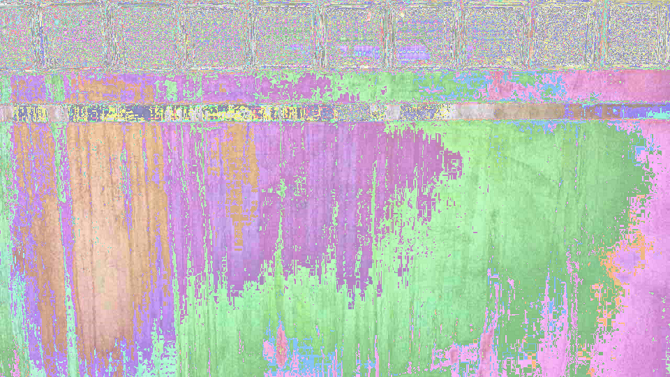 5 Bit Differenzbild |
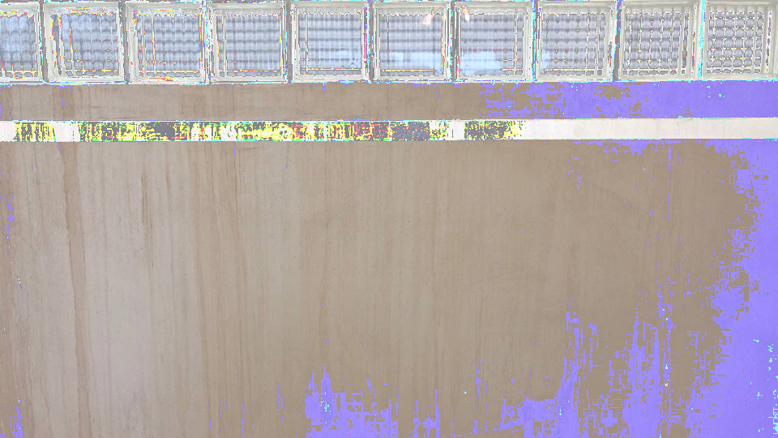 7 Bit Differenzbild |